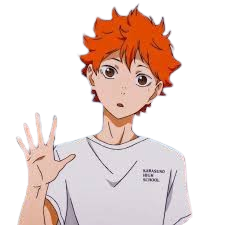

Shoyo Hinata
Middle Blocker
Hinata has a cheerful and energetic personality. He is easily excited and can be quite loud, a trait second only to Nishinoya and Tanaka. For the most part, Hinata is very simpleminded which sometimes causes him to make rash decisions.
Skills
Possesses incredible speed.
Has a very high vertical jump.
Hinata's quick reflexes .
Teammates
Tobio Kageyama
· Setter and hs a prodigy in volleyball.
Kei Tsukishima
· Tall and can block even the power spikers.